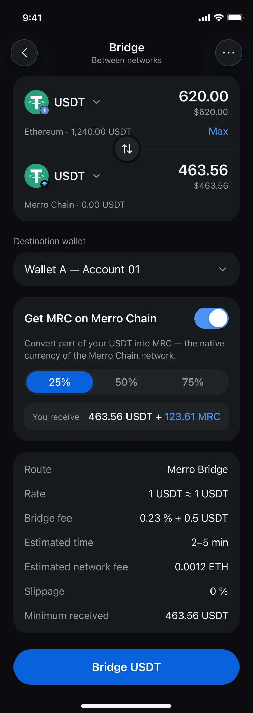
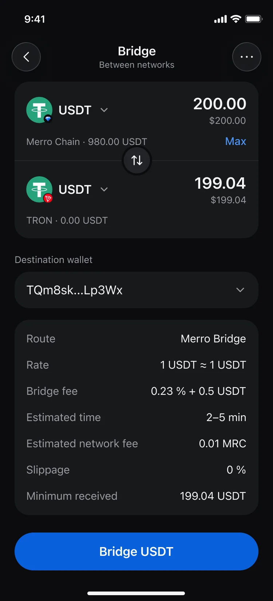

Обмен и мост стали двумя разделами вместо одной формы с вкладками.
- Мешало
- Обмен и мост жили в одной форме «токен → токен» и переключались мелкими вкладками. Заказчик назвал это своей болью и попросил развести два сценария.
- Решил
- У обмена и моста теперь свои разделы, меню, история и вопросы. Мост встал в ряд кошелька на место кнопки «Ещё». На страницах ETH и TRX его нет: эти токены он не переносит. Сеть выбирается вместе с токеном в строке суммы, поэтому отдельный блок «Откуда — куда» я убрал: он повторял этот выбор.
- Отверг
- Одну форму с вкладками. Я собрал оба варианта рядом, и в общей форме оставалась проблема, с которой пришёл заказчик.

